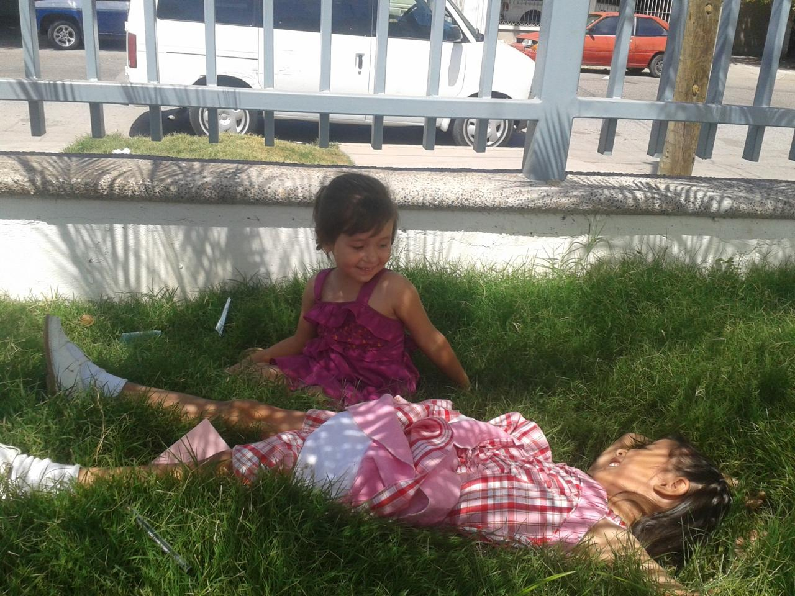

¡Hola! Me llamo Hilen Rebeca Ruiz Peña, nací el 12 de marzo del 2009 en Los Mochis, Sinaloa, México, en una familia compuesta por mi mamá, papá, 3 hermanas, algunas tías y mi abuela. A la edad de 4 años ingresé al kínder Ignacio José Allende, donde cursé dos años. A los 6 entré a la primaria Héroe de Nacozari, donde en tercer y cuarto grado obtuve el primer lugar en las Olimpiadas del Conocimiento Infantil a nivel zona escolar. A los 12 años ingresé a la Secundaria Técnica No. 89, donde pasé momentos que recuerdo con mucho cariño. De los más memorables está cuando participé en una obra de teatro en tercer grado. Desde que hicimos el guión, ensayos y escenografía hasta que presentamos la obra me divertí mucho en compañía de mis amigos. En 2024 entré a la preparatoria donde ahora me encuentro, el Centro de Estudios Técnologico industrial y de servicios No. 68. Actualmente estoy cursando quinto semestre en la especialidad de programación, donde me divierto junto a mis amigos. Me considero alguien tímida, pero cuando estoy en confianza no lo soy tanto.

Esta es una de mis canciones favoritas:
Esta es la plataforma donde veo algunas de mis series favoritas aquí.
| Nivel | Escuela | Periodo |
|---|---|---|
| Kínder | Ignacio José Allende | 2013-2015 |
| Primaria | Héroe de Nacozari | 2015-2021 |
| Secundaria | Secundaria Técnica No.89 | 2021-2024 |
| Preparartoria | CETis 68 | 2024-Presente |
Ver la biografía de mi compañera: Biografía de Kristey